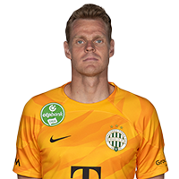
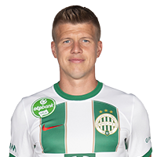

Dibusz Dénes a 2008/09-es szezonban, a másodosztályban debütált a PMFC első csapatában. Az akkor 18
esztendős kapus az NB II-es sorozat mellett a Magyar Kupában is szerepet kapott. Dibusz a következő
szezontól vált a Pécs első számú kapusává. Az idény második fordulójában kapta meg a
lehetőséget, amellyel sikerült élnie: a hátralévő 29 összecsapás mindegyikén az ő nevével kezdődött a
baranyai gárda összeállítása. Ez az év duplán sikeres volt a kapus számára, hiszen a Péccsel feljutást
ünnepelhetett. Dibusz tehát egy szinttel feljebb bizonyíthatott. A játékos csapaton belüli helyzete az
NB I-ben sem
változott, a 2011/12-es és a 2012/13-as szezon alatt mindössze egyetlen bajnokit hagyott ki, és fiatal
kora ellenére az NB I egyik legmegbízhatóbb kapusává vált. A játékos teljesítménye együttesünk figyelmét
is felkeltette, és a sikeres tárgyalásoknak köszönhetően a
felek 2014. január 15-én szerződést kötöttek egymással. Azóta Dibusz klubunk első számú kapusa,
teljesítményével pedig kiérdemelte a válogatott meghívót is. 2014. október 14-én, Feröer ellen debütált
a nemzeti tizenegyben, és jelenleg is a válogatott tagja, amellyel 2016 nyarán részt vett az
Európa-bajnokságon. Dibusz Dénes a Magyar Kupa és a Szuperkupa megnyerését követően 2015. július 31-én
három évvel
meghosszabbította szerződését a Ferencvárosi Torna Clubbal, 2016-ban pedig a bajnoki címet is
megszerezte a mieinkkel az újabb Magyar Kupa-győzelem mellett. 2017 májusában harmadszor is Magyar
Kupa-győzelmet ünnepelhetett a Fradival: a finálét eldöntő
tizenegyespárbajban Kire Ristevski lövését védte. 2019-ben tagja volt a 30., 2020-ban pedig a 31.
bajnoki címet megszerzett csapatnak. Emellett a 2019-2020-as Európa Liga csoportkörében csapatunk
oszlopos tagja volt. A 2020/21-es szezonban tagja volt a Bajnokok Ligája csoportkörét megjárt, és a 32.
bajnoki címet
megszerzett csapatunknak. A 2021/22-es szezonban tagja volt az UEFA Európa Liga csoportkörét megjárt,
valamint a 33. bajnoki címet
és a 24. MOL Magyar Kupát megszerzett csapatnak. A 2022/23-as szezonban tagja volt az UEFA Európa Liga
csoportkörét és nyolcaddöntőjét megjárt, valamint
a 34. bajnoki címet megszerzett csapatnak. Jelenleg a 33. életévében jár.

Botka Endre
Botka a Magyar Futball Akadémián nevelkedett, a 29 éves jobbhátvéd profi karrierjét nevelőegyesületében,
a Budapest Honvédban kezdte. Az NB I-ben 2014 májusában, 19 évesen mutatkozott be, kezdőként
végigjátszotta a Győri ETO elleni találkozót. Nem sokkal később a több játéklehetőség érdekében
kölcsönjátékosként Kecskemétre került, ahol 15 mérkőzésen egy gólt szerzett. Az alföldi város csapatában
remek teljesítményt nyújtott, többször is bekerült a forduló válogatottjába. A kölcsönjáték annyira jól
sikerült számára, hogy visszatérve anyaegyesületéhez, Marco Rossi együttesében is alapemberré vált, a
2015/16-os szezonban 31 bajnokin lépett pályára a vörös-feketék színeiben. A jelenlegi bajnokságban
17-szer szerepelt, emellett két Magyar Kupa-meccsen is játszott. A jó teljesítményre a nemzeti csapatban
is felfigyeltek: 2015 augusztusában Bernd Storck szövetségi kapitány meghívta 33 fős bő keretébe Botkát,
első válogatottságára azonban tavaly novemberig kellett várnia: a Svédország elleni barátságos
mérkőzésen a 69. percben csereként állt be. 2017 májusában Magyar Kupát nyert a Ferencvárossal az első
szezonjában. 2019-ben
tagja volt a 30., 2020-ban pedig a 31. bajnoki címet megszerzett csapatnak. A 2020/21-es szezonban tagja
volt a Bajnokok Ligája csoportkörét megjárt, és a 32. bajnoki címet megszerzett csapatunknak. A
2021/22-es szezonban tagja volt az UEFA Európa Liga csoportkörét megjárt, valamint a 33. bajnoki címet
és a 24. MOL Magyar Kupát megszerzett csapatnak. A 2022/23-as szezonban tagja volt az UEFA Európa Liga
csoportkörét és nyolcaddöntőjét megjárt, valamint a 34. bajnoki címet megszerzett csapatnak.
Sigér Dávid
Sigér Dávid 1990. november 30-án született Debrecenben, és szülővárosában tanulta a futball alapjait. A
DVSC első csapatába azonban nem tudta beverekedni magát, mindössze néhány Ligakupa-mérkőzésen lépett
pályára. A középpályás a 2013/14-es szezonban, a Mezőkövesd színeiben mutatkozott be az élvonalban, majd
2014 nyara óta a Balmazújvárost erősítette. A 2016/17-es szezonban alapembere volt a feljutást kiharcoló
balmazi alakulatnak, majd a 2017/18-as szezonban közel járt ahhoz, hogy csapatkapitányként és a
középpálya vezéreként élvonalban tartsa a narancs-feketéket. Sigér Dávid négy gólt lőtt a a 2017/18-as
bajnokságban, az elsőt épp a Fradi ellen. A 2018/19-es szezonban viszont már a Ferencváros sikeréért
dolgozik. 2019-ben tagja volt a 30., 2020-ban pedig a 31. bajnoki címet megszerzett csapatnak. A
2020/21-es szezonban tagja volt a Bajnokok Ligája csoportkörét megjárt, és a 32. bajnoki címet
megszerzett csapatunknak. A 2021/22-es szezonban tagja volt a 33. bajnoki címet megszerzett csapatnak. A
2022/23-as szezonban tagja volt a 34. bajnoki címet megszerzett csapatnak.

Varga Barnabás
Varga Barnabás 1994. október 25-én született Szombathelyen. Itt ismerkedett meg a labdarúgás alapjaival,
majd a Haladás utánpótlásába került. Egészen az U17-es együttesig jutott, onnan 2010-ben igazolt az
osztrák Eberauhoz. A burgenlandi együttesben hat évet töltött, majd a szintén ausztriai Mattersburg
(Nagymarton) együttesében folytatta. Első mattersburgi szezonjában 11 mérkőzésen 473 perc alatt egy gól
és egy gólpassz szerepelt a neve mellett. Ezután szerepelt a klub második csapatában is, majd végül
2019-ben a Lafnitzhoz került. A stájerországi együttesben egy évet töltött el, ez idő alatt 30
mérkőzésen 12 gólt és 5 gólpasszt jegyzett. 2019 telén visszatért Magyarországra, ahol az NB II-ben
szereplő Gyirmót játékosa lett. A győri csapatban töltött első teljes idényében 24 meccsen 12 gólt lőtt,
ezzel is aktív részt vállalt az együttes NB I-be való feljutásában. A Gyirmóttal a magyar élvonalban
29-szer lépett pályára, 13 gólja mellett 6 gólpasszt osztott ki. Kimagasló teljesítményével felhívta
magára a figyelmet, végül 2022 nyarán a Pakshoz igazolt. Rögtön alapember lett a tolnai megyei
együttesben. A mögöttünk hagyott idényben 31 bajnokin 26 gól és 2 gólpassz volt a mérlege, így ő lett az
NB I gólkirálya, illetve a RangAdó díjátadó gálán ő kapta meg a szezon legjobb játékosának járó
elismerést is. Kimagasló teljesítménye nem maradt érdemtelen, hiszen 2023 nyarán a Fradihoz igazolt,
valamint a magyar férfi labdarúgó-válogatott
szövetségi kapitánya, Marco Rossi behívta az észtek és a bolgárok ellen készülő keretébe, ráadásul
március 27-én, az utóbbi ellen 3-0-ra megnyert hazai Eb-selejtezőn 31 percet kapott.